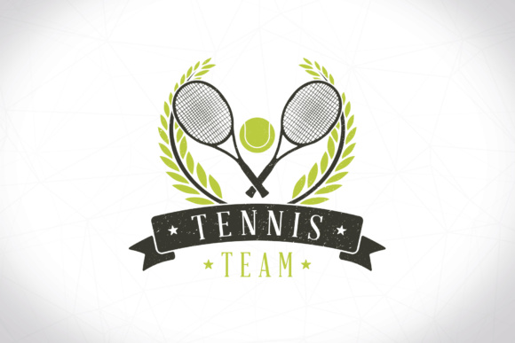
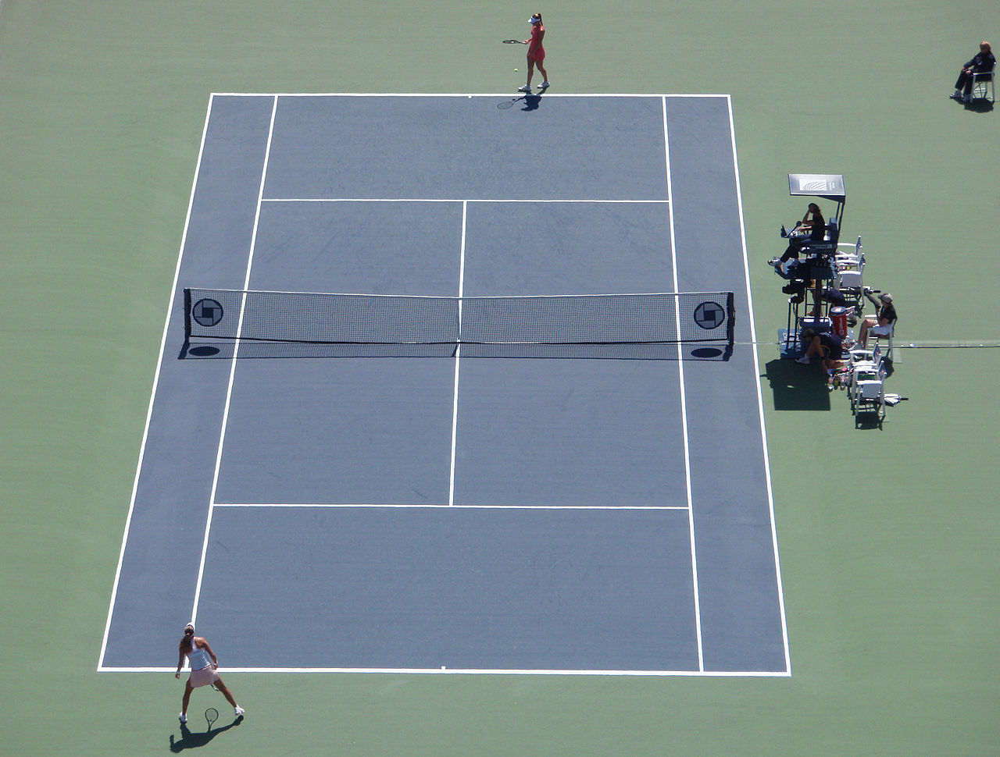
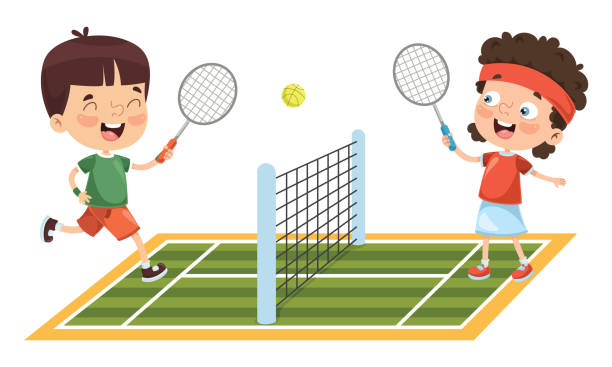

what is tennis
Tennis is a racket sport that can be played individually against a single opponent ( single) or between two teams of two players each ( double). Each player uses a tennis racket that is strung with cord to strike a hollow rubber ball covered with felt over or around a net and into the opponent's court. The object of the game is to manoeuvre the ball in such a way that the opponent is not able to play a valid return. The player who is unable to return the ball validly will not gain a point, while the opposite player will.

Rules of Tennis
